Cardboard Computer
I would like to go home now, please
Images
Below you will find a series of process screenshots. First, you'll see the MS Paint style monitor drawing. Next, my PremierePro timelines. Then, web building.


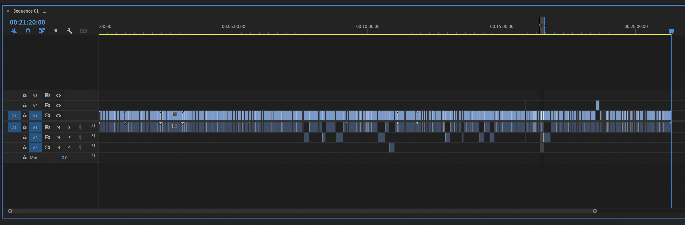
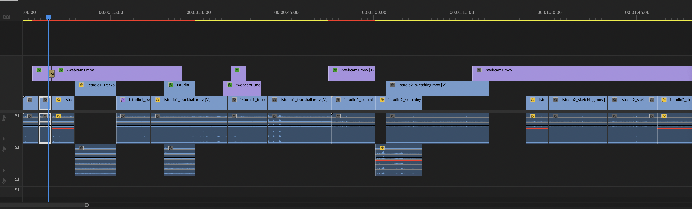
 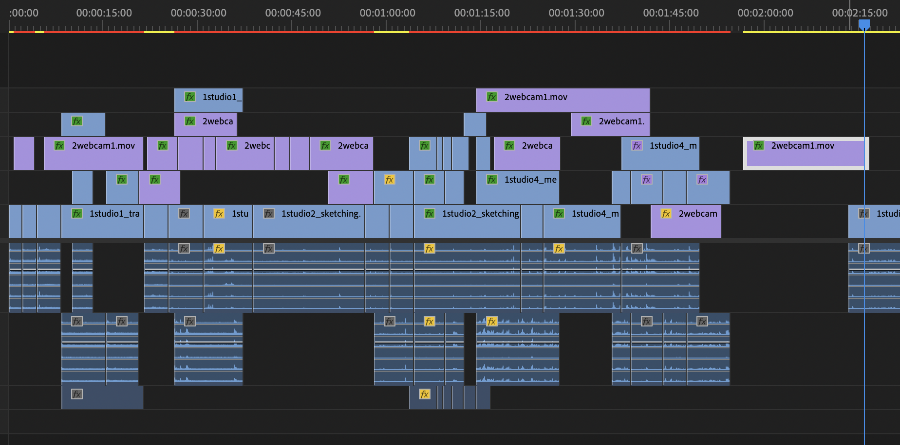
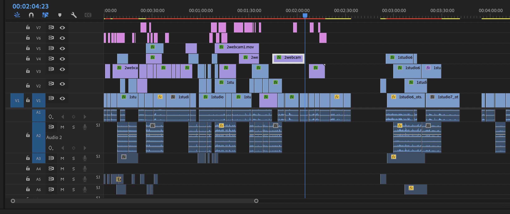
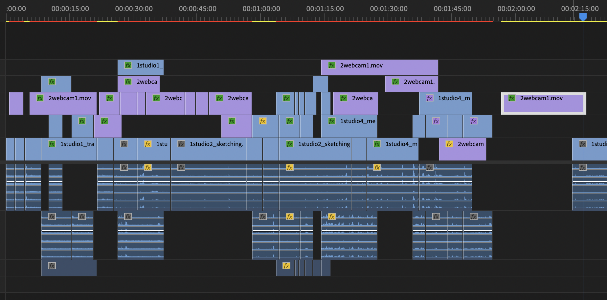
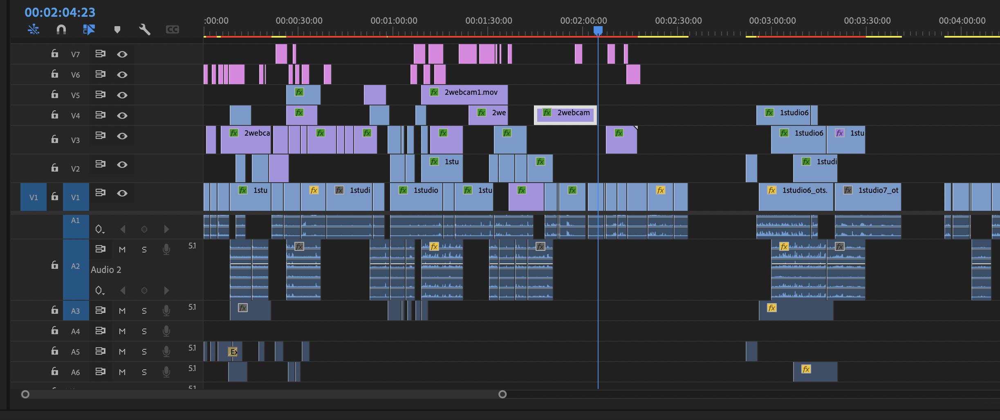
 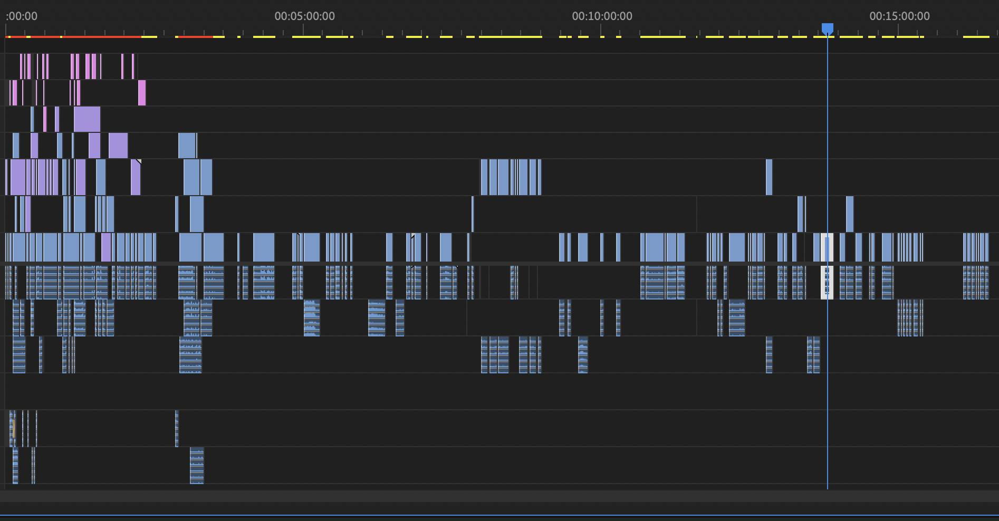
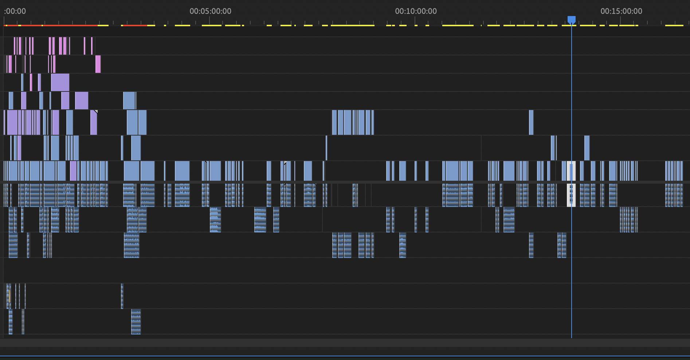
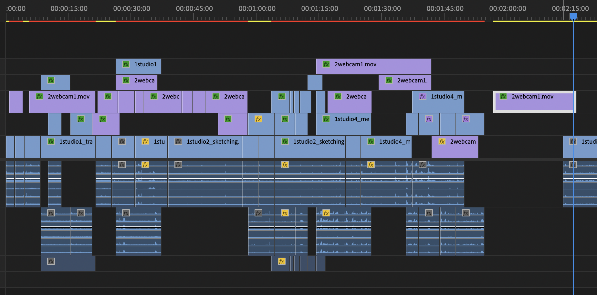
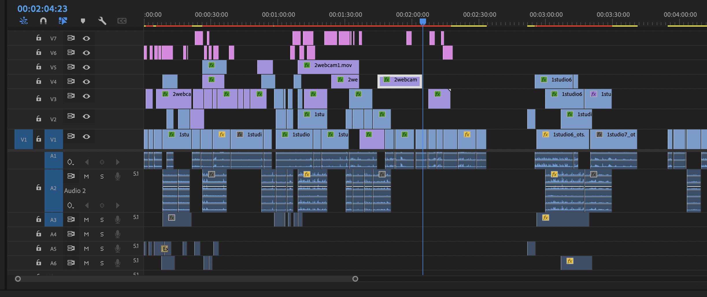
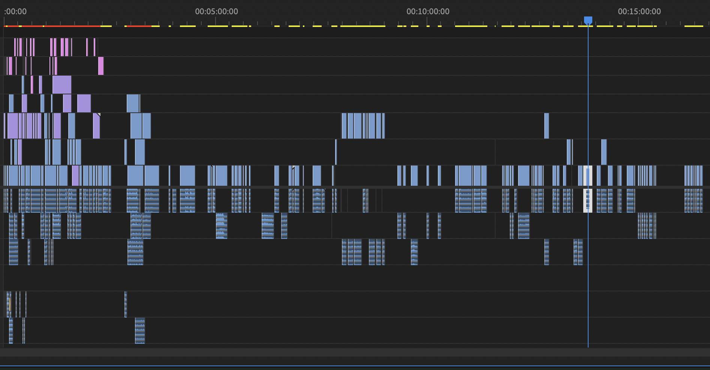
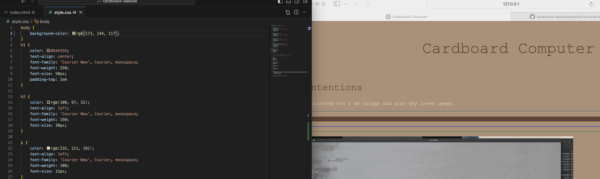
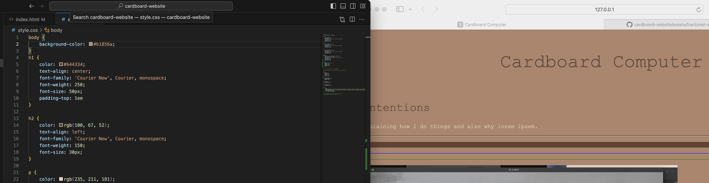
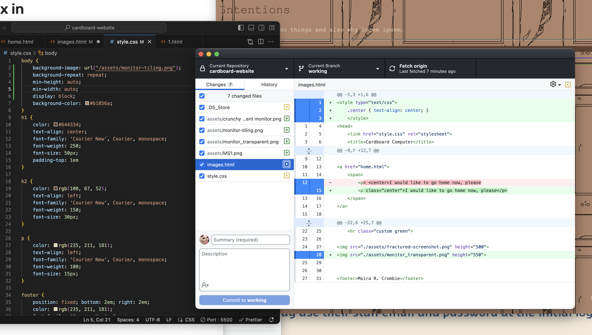
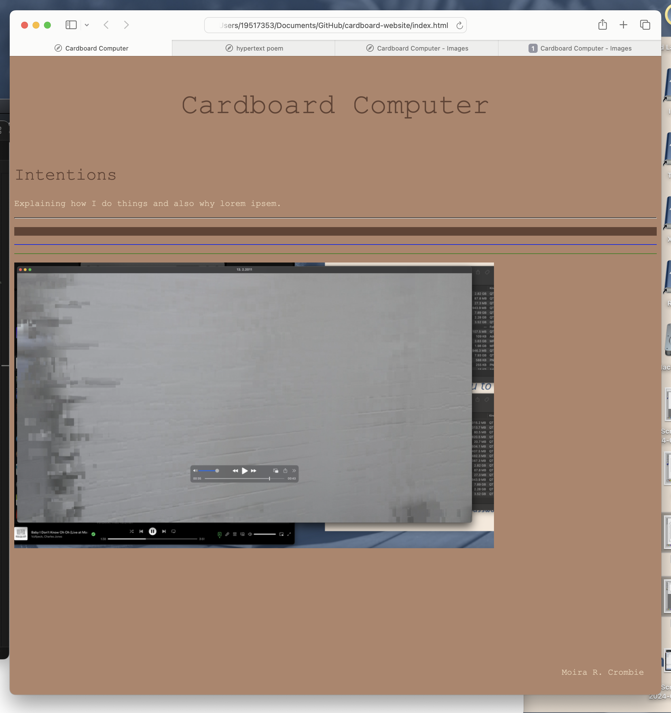
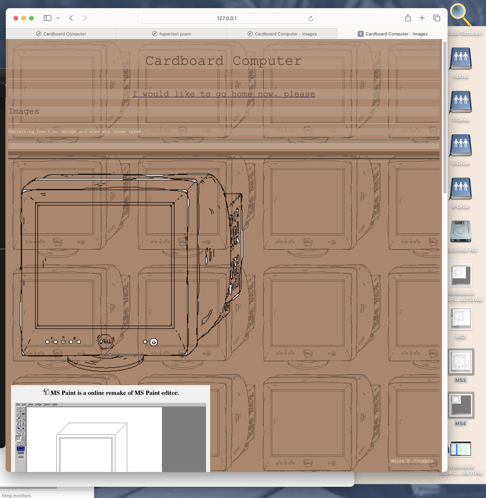
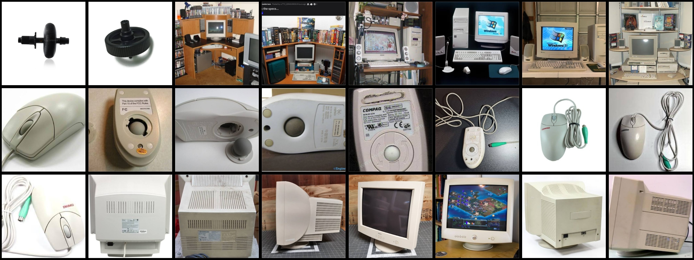